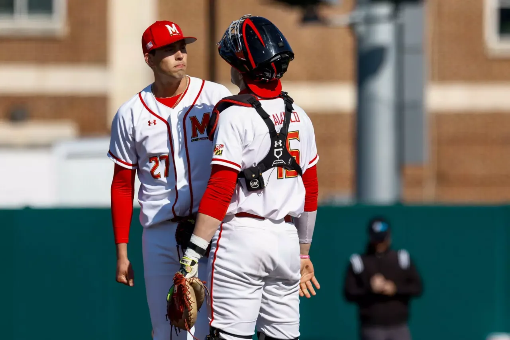
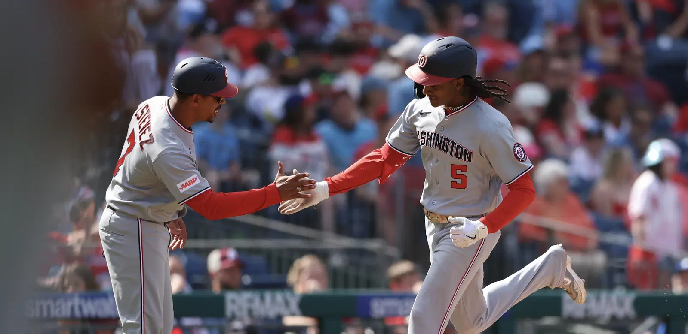

My Work
After bye week, students are noticing Maryland football's strong start
Man on the street article about Maryland Football's strong start to the 2025 season.

Zahir Mathis developing into impact piece as a freshman in Maryland football's defense
Feature article that dived into freshman defensive end, Zahir Mathis' recruitment with added analysis from his first two games.

Illinois downs Maryland baseball 11-0 to complete series sweep
Game recap after a rough outing from Maryland's baseball team. I held the baseball beat for Terrapin Sports Central during the 2025 season.

Good & Bad From Washington Nationals Series Loss vs. Phillies
Series analysis after the Washington Nationals lost to the Phillies. I recapped the three-game series and dived into deeper analysis using the "Good and Bad" format.

Maryland's season ends at the hands of Iowa in the Big Ten Tournament
Game recap after the final game of Maryland's Men's Basketball season. I held a beat for the Maryland Men's Basketball team through the 2025-26 season.

How Bishop Boswell fits into Maryland men's basketball's 2026-27 roster
Analysis of transfer addition, Bishop Boswell. I dove into his statistical profile and watched his tape from his first two seasons at Tennessee and laid out how he would fit in Maryland's 2026-27 roster.